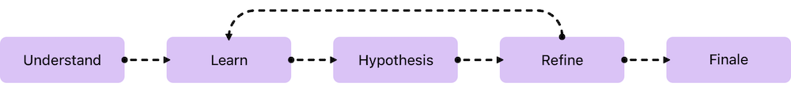
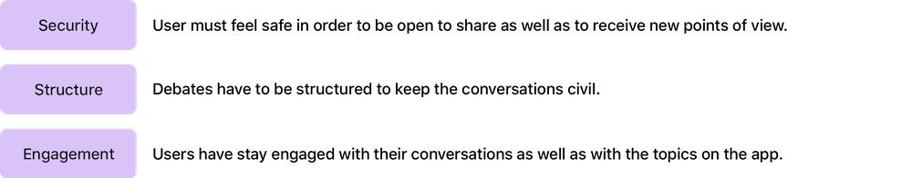
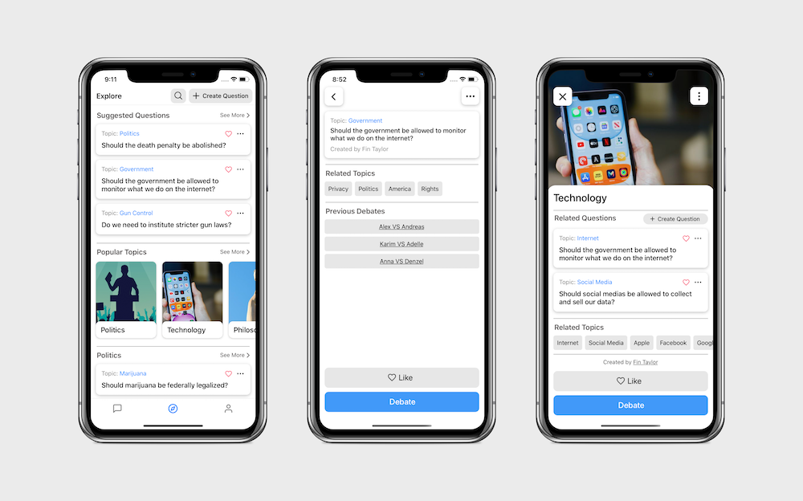
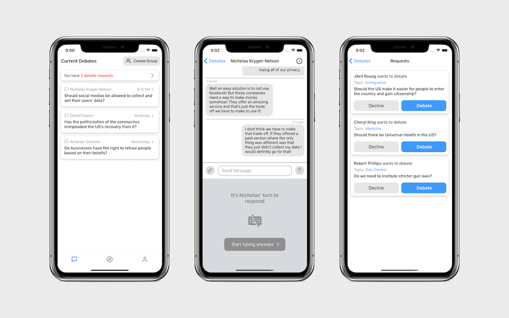

One of the things that fascinates me about technology is how it can affect the way we communicate. I love debating with my friends and talking about current world events but I find that a lot of the time, we agree on topics like politics because we’ve grown up in similar environments. I wanted to find a way to debate with people who come from different backgrounds and have differing opinions.
Approach

I'm taking an approach that involves first understanding the dynamics behind my goal, then learning and coming up with potential solutions, then testing them and finaly repeating that process to find the optimal solution.
Current Behavior
By connecting us, the internet gives us a great opportunity to understand and debate differing points of view. However, when I look at the current state of online communication, I find that discussions quickly devolve into insults, even over topics that are barely controversial. Politics, now more than ever, are dividing us; so I started to think of a way to use the immense benefits of the internet to enable civil conversations.
Research
I wanted to create an app that would allow for open communication and help people to be more understanding of each other. Before diving into designing the app, I needed to understand why it was so hard to have a civil online discussion. I found that people either see valid criticism as a personal attack or simply attack someone else personally for their opinion without making a well thought out argument. Personal attacks just end up making people even more blindly entrenched in their views.
As I started to think of ways to address these problems I looked into past presidential debates and researched guidelines for debate club debates to observe how they were organized. Based on what I learned, I was able to brainstorm solutions that could be implemented into the app.
Hypothesis
I realized that there are two key issues with online debates: the first is that people tend to not be open to new opinions; the second is that people tend to react with their emotions.
Experience Pillars

Brainstorming
Exploring Topics

There would be many different topics that the users could have conversations about. The main ones would be topics relevant to that day’s news as well as topics that are suggested based on previous topics the user has shown interest in. From the main topics page, users would also be able to browse suggested categories for topics and featured questions. The user could also search for a topic they are interested in or search for another user such as one of their friends if they want to have a conversation with someone in particular.
Messaging

To solve the first obstacle and get people to open themselves up to the possibility of new ideas, the app randomly assigns people to one side of the debate. This forces people to look at the issue from a different perspective but also shifts the focus from attacking a particular person to looking objectively at the topic at hand. The second issue is addressed by allowing a user to send only one message at a time; once you’ve sent your argument, you have to wait for the person to reply before continuing. This gives each person the time to think about the topic so that they can elaborate a well thought out response instead of just reacting with their emotions. The structure of the app would force you to see where the other side was coming from, but also examine and question your own opinions.